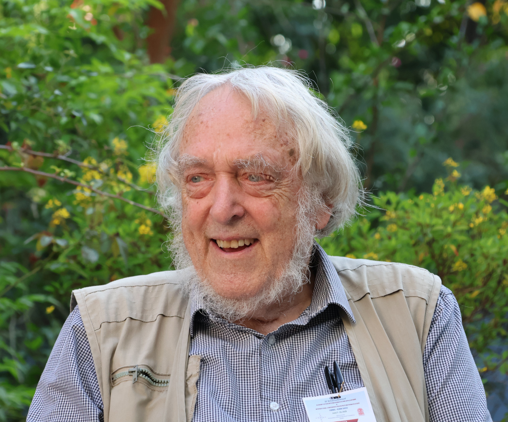

This page is under
construction (and probably always will be!)
This page is under
construction (and probably always will be!)
Welcome to my new homepage on GitHub.
This page is under
construction (and probably always will be!)
I am an Emeritus Professor in the School of Mathematics and Statistics at the University of St Andrews, and an Emeritus Professor of Mathematics at Queen Mary, University of London.
I am a Fellow of the Royal Society of Edinburgh.
About me
On this site
|
 |
Elsewhere
|
Among his discoveries was the fact that the structures in a nontrivial Ramsey class form a Fraïssé class (and so have a countable homogeneous Fraïssé limit), and are rigid (they have trivial automorphism group).
This was subsequently explained by the celebrated theorem of Kechris, Pestov and Todorčević, which uses topological dynamics (specifically, the automorphism group of the Fraïssé limit is extremely amenable) to show that this group has a total order as a reduct, and hence the structures in the class are totally ordered (and hence rigid).
Early in this story, I observed that there exist Fraïssé classes of rigid structures which have no "natural" total order, and wondered whether they could be Ramsey classes, and (after the KPT theorem showed that they were not) whether one could find explicit failures of the Ramsey property.
Siavash Lashkarighouchani and I have just done this. The paper is on the arXiv, at 2512.05684.
Old research snapshots are kept here.
| I am Honorary Editor-In-Chief of the Australasian Journal of Combinatorics, an international open-access journal published by the Combinatorial Mathematics Society of Australasia. |
|
School of Mathematics and Statistics
University of St Andrews North Haugh St Andrews, Fife KY16 9SS SCOTLAND |
Fax: +44 (0)1334 46 3748 Email: pjc20(at)st-arthurs(dot)ac(dot)uk [oops – wrong saint!] |
Page revised 21 April 2025 |
Consider the following three graphs defined on a finite group G:
It is known that the power graph and enhanced power graph are equal if and only if every element of G has prime power order. After preliminary work by Higman and Suzuki, such groups were all determined by Brandl.
Problem: For which groups are the power graph and the intersection power graph equal?
It is known that groups in which all elements have prime order have this property, and that it implies that the power graph is a cograph. But an exact characterisation is unknown.
What we know about this question is in my paper with Sudip Bera, arXiv 2509.03919.
Old poblems are kept here.
 orcid.org/0000-0003-3130-9505
orcid.org/0000-0003-3130-9505